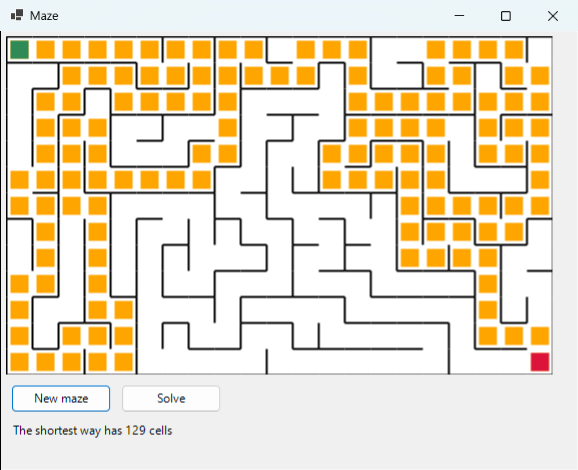

A maze
Make a perfect maze with a stack, find the shortest way through it with a queue, and draw both on a canvas. Two classic algorithms and a picture you can see.
What you will learn#
- generating a maze with depth-first search and a stack,
- finding the shortest path with breadth-first search and a queue,
- storing a grid as a list of lists,
- drawing walls and a path on a canvas,
- testing an algorithm with properties instead of fixed answers.
The program#
# a maze - make it with a stack (depth-first), solve it with a queue (breadth-first), draw it on a canvas
load "dotnet.ring"
using {
"System.Drawing"
"System.Windows.Forms"
}
C_COLUMNS = 21
C_ROWS = 13
C_CELL = 26
oForm = ""
oPicture = ""
oCanvas = ""
oInfo = ""
aOpen = [] # aOpen[row][column] = a text of the open sides: "N", "E", "S", "W" in any combination
aPath = [] # the solution: a list of [row, column]
nSeed = 2024
func main
oForm = uiForm("Maze",C_COLUMNS * C_CELL + 30,C_ROWS * C_CELL + 100)
oPicture = uiPictureBox(oForm,5,5,C_COLUMNS * C_CELL,C_ROWS * C_CELL)
oCanvas = new UiCanvas(oPicture)
uiButton(oForm,"New maze",10,C_ROWS * C_CELL + 15,100,28,"newMaze()")
uiButton(oForm,"Solve",120,C_ROWS * C_CELL + 15,100,28,"solve()")
oInfo = uiLabel(oForm,"",10,C_ROWS * C_CELL + 52,500,22)
newMaze()
uiRun(oForm)
func nextRandom nLimit
nSeed = (nSeed * 1103515245 + 12345) % 2147483648
return (floor(nSeed / 65536) % nLimit) + 1
# ---------------------------------------------------------------- making the maze (depth-first with a stack)
# Start with all walls. Walk to a random neighbor that has not been visited, opening the wall between the two cells; when
# there is no such neighbor go back (pop the stack). Every cell is visited once, so there is exactly one path between any two cells.
func newMaze
aOpen = []
aSeen = []
for nRow = 1 to C_ROWS
aOpen + list(C_COLUMNS)
aSeen + list(C_COLUMNS)
for nColumn = 1 to C_COLUMNS
aOpen[nRow][nColumn] = ""
aSeen[nRow][nColumn] = False
next
next
aStack = [[1,1]]
aSeen[1][1] = True
while len(aStack) > 0
aCell = aStack[len(aStack)]
aFree = freeNeighbors(aCell,aSeen)
if len(aFree) = 0
del(aStack,len(aStack))
else
aNext = aFree[nextRandom(len(aFree))]
openBetween(aCell,aNext)
aSeen[aNext[1]][aNext[2]] = True
aStack + [aNext[1],aNext[2]]
ok
end
aPath = []
oInfo.Text = "A new maze: " + C_COLUMNS + " x " + C_ROWS + " cells"
draw()
# the four neighbors [row, column] that exist and were not visited
func freeNeighbors aCell, aSeen
aList = []
for aMove in [[-1,0],[0,1],[1,0],[0,-1]]
nRow = aCell[1] + aMove[1]
nColumn = aCell[2] + aMove[2]
if nRow >= 1 and nRow <= C_ROWS and nColumn >= 1 and nColumn <= C_COLUMNS
if not aSeen[nRow][nColumn]
aList + [nRow,nColumn]
ok
ok
next
return aList
func openBetween aFrom, aTo
if aTo[1] < aFrom[1]
aOpen[aFrom[1]][aFrom[2]] += "N"
aOpen[aTo[1]][aTo[2]] += "S"
but aTo[1] > aFrom[1]
aOpen[aFrom[1]][aFrom[2]] += "S"
aOpen[aTo[1]][aTo[2]] += "N"
but aTo[2] > aFrom[2]
aOpen[aFrom[1]][aFrom[2]] += "E"
aOpen[aTo[1]][aTo[2]] += "W"
else
aOpen[aFrom[1]][aFrom[2]] += "W"
aOpen[aTo[1]][aTo[2]] += "E"
ok
# ---------------------------------------------------------------- solving (breadth-first with a queue)
# Visit the cells in rings around the start: first the cells 1 step away, then 2 steps... The first time the exit is reached, the way
# there is the SHORTEST path. Each cell remembers the cell it was reached from, and the path is followed back from the exit.
func solve
aFrom = []
for nRow = 1 to C_ROWS
aFrom + list(C_COLUMNS)
for nColumn = 1 to C_COLUMNS
aFrom[nRow][nColumn] = 0
next
next
aQueue = [[1,1]]
nHead = 1
aFrom[1][1] = [1,1]
while nHead <= len(aQueue)
aCell = aQueue[nHead]
nHead++
if aCell[1] = C_ROWS and aCell[2] = C_COLUMNS
exit
ok
for aMove in [["N",-1,0],["E",0,1],["S",1,0],["W",0,-1]]
if substr(aOpen[aCell[1]][aCell[2]],aMove[1]) > 0
nRow = aCell[1] + aMove[2]
nColumn = aCell[2] + aMove[3]
if isnumber(aFrom[nRow][nColumn])
aFrom[nRow][nColumn] = aCell
aQueue + [nRow,nColumn]
ok
ok
next
end
aPath = []
aCell = [C_ROWS,C_COLUMNS]
while not (aCell[1] = 1 and aCell[2] = 1)
aPath + [aCell[1],aCell[2]]
aCell = aFrom[aCell[1]][aCell[2]]
end
aPath + [1,1]
oInfo.Text = "The shortest way has " + len(aPath) + " cells"
draw()
# ---------------------------------------------------------------- drawing
func draw
oCanvas.clear("White")
for aCell in aPath
oCanvas.fillRect((aCell[2] - 1) * C_CELL + 4,(aCell[1] - 1) * C_CELL + 4,C_CELL - 8,C_CELL - 8,"Orange")
next
oCanvas.fillRect(4,4,C_CELL - 8,C_CELL - 8,"SeaGreen") # start
oCanvas.fillRect((C_COLUMNS - 1) * C_CELL + 4,(C_ROWS - 1) * C_CELL + 4,C_CELL - 8,C_CELL - 8,"Crimson") # exit
for nRow = 1 to C_ROWS
for nColumn = 1 to C_COLUMNS
nX = (nColumn - 1) * C_CELL
nY = (nRow - 1) * C_CELL
cOpen = aOpen[nRow][nColumn]
if substr(cOpen,"N") = 0
oCanvas.line(nX,nY,nX + C_CELL,nY,"Black",2)
ok
if substr(cOpen,"W") = 0
oCanvas.line(nX,nY,nX,nY + C_CELL,"Black",2)
ok
if nRow = C_ROWS and substr(cOpen,"S") = 0
oCanvas.line(nX,nY + C_CELL,nX + C_CELL,nY + C_CELL,"Black",2)
ok
if nColumn = C_COLUMNS and substr(cOpen,"E") = 0
oCanvas.line(nX + C_CELL,nY,nX + C_CELL,nY + C_CELL,"Black",2)
ok
next
next
oCanvas.show()
How it works#
The grid#
The maze is C_ROWS rows of C_COLUMNS cells. aOpen[row][column] is a text with the open sides of the cell: "N", "E", "S" and "W" in any order (for example "NE"). A cell that has no letter is closed on all sides. Walls are drawn for every side that is not in the text.
Making the maze: depth-first with a stack#
Start in the top left cell and walk: choose a random neighbor that has not been visited, open the wall between the two cells and move there, pushing the new cell on the stack. When a cell has no unvisited neighbor, go back by popping the stack. The algorithm ends when the stack is empty — every cell was visited exactly once. This gives long winding corridors and a perfect maze: between any two cells there is exactly one path. The self test checks this property: a perfect maze with 273 cells has exactly 272 openings.
Solving: breadth-first with a queue#
The solver visits the cells in rings around the start — first the cells one step away, then two steps and so on — using a queue (the tutorial Undo, redo and queues). Each cell remembers the cell it was reached from (aFrom). The first time the exit is reached, the path found is the shortest one, because all closer cells were visited first. Follow the aFrom links back from the exit to the start to get the path, and draw it in orange. In a perfect maze there is only one path, but the same code finds the shortest way in a maze with loops.
Stack → goes deep first and finds a way. Queue → goes level by level and finds the shortest way. The only difference between the two algorithms is which end of the list you take the next cell from.
Drawing#
Cells on the path are small orange squares, the start is green and the exit red. Each cell draws only the walls that are not open (north and west for each cell, and the south and east borders at the edge). oCanvas.line(x1, y1, x2, y2, color, width) draws a wall.
Testing#
You cannot test a random maze against a fixed picture. The self test checks properties instead: the number of openings, the path starts at the exit and ends at the start, every step moves to a neighbor, and no step crosses a wall. Tests for properties keep working when you change the generator.
The checks of this program are in a separate file, selftest/ch12_maze.ring:
# the checks of ch12_maze.ring: run with ring ch12_maze.ring --selftest (the program loads this file and runs selfTest() once its window is shown)
func selfTest
# a perfect maze: C_COLUMNS * C_ROWS cells joined by exactly (cells - 1) openings
nOpenings = 0
for nRow = 1 to C_ROWS
for nColumn = 1 to C_COLUMNS
nOpenings += len(aOpen[nRow][nColumn])
next
next
dnAssert("a perfect maze has cells - 1 openings",nOpenings / 2,C_COLUMNS * C_ROWS - 1)
solve()
dnAssert("the path starts at the exit",aPath[1][1] = C_ROWS and aPath[1][2] = C_COLUMNS,True)
dnAssert("the path ends at the start",aPath[len(aPath)][1] = 1 and aPath[len(aPath)][2] = 1,True)
lConnected = True
for nI = 1 to len(aPath) - 1
if fabs(aPath[nI][1] - aPath[nI + 1][1]) + fabs(aPath[nI][2] - aPath[nI + 1][2]) != 1
lConnected = False
ok
next
dnAssert("every step of the path moves to a neighbor cell",lConnected,True)
lThroughOpenings = True
for nI = 1 to len(aPath) - 1
aThis = aPath[nI]
aThat = aPath[nI + 1]
cSide = "N"
if aThat[1] > aThis[1]
cSide = "S"
but aThat[2] > aThis[2]
cSide = "E"
but aThat[2] < aThis[2]
cSide = "W"
ok
if substr(aOpen[aThis[1]][aThis[2]],cSide) = 0
lThroughOpenings = False
ok
next
dnAssert("the path never crosses a wall",lThroughOpenings,True)
newMaze()
dnAssert("a new maze has no path yet",len(aPath),0)What you learned#
- stack and queue in real algorithms,
- a grid as a list of lists,
- shortest path by breadth-first search,
- testing properties.
Exercises#
- Add a button that shows the maze being built, one step per timer tick (the tutorial Watching sorting algorithms).
- Remove some walls at random (a maze with loops) and check that the solver still finds the shortest way.
- Let the user move a dot with the arrow keys from the start to the exit.